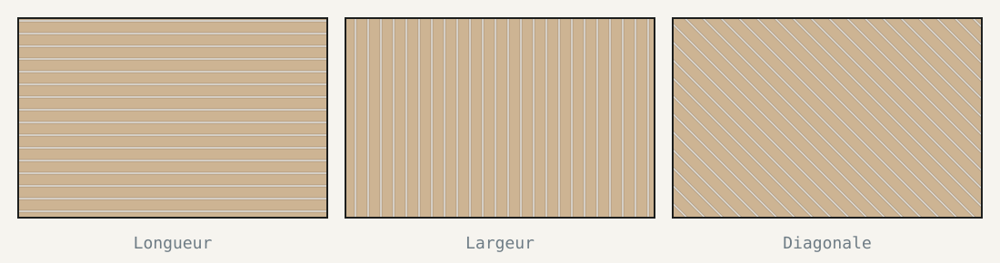

Le sens de pose est la première décision visible d'un chantier de parquet. Elle influence la perception des volumes, la façon dont la lumière accroche les joints, la quantité de coupes et parfois la tenue même du revêtement. Une fois les lames collées ou clouées, revenir en arrière signifie déposer l'ensemble.
Bonne nouvelle : dans la majorité des pièces, le choix se joue sur cinq critères, dans un ordre de priorité assez stable.
1. La lumière : le critère qui prime presque toujours
Un parquet n'est jamais parfaitement plan. Chaque joint crée un micro-relief qui, éclairé de côté, dessine une ligne d'ombre. Poser les lames dans le sens des rayons — c'est-à-dire perpendiculairement au mur qui porte la fenêtre — limite ces ombres et donne un sol visuellement plus continu.
Ce réflexe vient de la pose clouée traditionnelle, mais il reste valable avec les parquets contrecollés actuels, notamment avec des finitions brossées ou huilées qui accrochent davantage la lumière rasante.
2. Les proportions de la pièce
Les lames guident le regard. Elles étirent l'espace dans leur direction :
- Pose dans la longueur : allonge encore la pièce. Idéale dans un séjour large, discutable dans un couloir déjà étroit.
- Pose dans la largeur : élargit visuellement un espace tout en longueur, au prix de coupes plus nombreuses.
- Pose en diagonale : casse les lignes, agrandit la perception d'un petit volume et rattrape des murs non parallèles.
Dans une pièce carrée, ce critère devient neutre : la lumière et le motif reprennent la main.

3. La circulation et les seuils
Le regard entre dans une pièce par la porte. Une pose parallèle à l'axe d'entrée accompagne ce mouvement ; une pose perpendiculaire crée une sensation de barrière, surtout avec des lames larges et contrastées.
Dans un logement traversant, on gagne à traiter les circulations comme un ensemble : couloir, entrée et pièces de vie posés dans la même direction donnent une continuité que les changements de sens cassent.
4. Le support impose parfois la direction
Certaines configurations ne laissent pas le choix :
- Pose clouée sur lambourdes ou solives : les lames doivent être perpendiculaires aux supports.
- Ancien plancher conservé : les nouvelles lames se posent perpendiculairement aux anciennes, pour ne pas superposer les joints.
- Chauffage au sol : la direction est libre, mais la pose collée et l'inertie du support imposent d'autres précautions.
5. Le motif choisi
Un Point de Hongrie ou un bâton rompu ne se raisonnent pas comme une pose droite : ce sont des motifs orientés, dont l'axe principal doit être décidé en premier. Cet axe suit généralement la longueur de la pièce ou l'axe d'entrée, plus rarement la fenêtre.
La méthode en cinq minutes
Repérez la source de lumière principale
Une seule fenêtre ? Elle décide. Plusieurs ouvertures ? Retenez celle qui éclaire le plus longtemps dans la journée.
Mesurez et notez le rapport longueur / largeur
Au-delà d'un rapport de 1,6, la pièce est perçue comme étroite : la pose dans la largeur ou en diagonale devient pertinente.
Tracez l'axe d'entrée
Depuis la porte principale, en direction du fond de la pièce. Cet axe départage souvent deux options équivalentes.
Vérifiez les contraintes du support
Solives, ancien plancher, chape, chauffage au sol : ces éléments peuvent annuler les trois premiers critères.
Visualisez avant de commander
Le simulateur de pose permet de comparer les orientations sur vos dimensions réelles, avec la fenêtre au bon endroit.
Visualiser plutôt qu'imaginer
Les descriptions ont leurs limites : deux orientations décrites de la même façon peuvent donner deux ambiances très différentes une fois posées. Le simulateur reproduit votre pièce, place la fenêtre et l'entrée, puis applique le motif choisi.
Questions fréquentes
Non, mais c'est le point de départ le plus fiable. Poser dans le sens des rayons limite les ombres portées sur les joints. Si la pièce est très étroite ou si le support impose une direction, un autre critère peut primer.
Oui, à condition d'assumer une transition nette : barre de seuil, coupe droite au droit de la porte ou frise de raccord. Un changement de sens sans transition dessinée se remarque immédiatement.
Oui. Une pose droite génère environ 7 à 8 % de chutes, une pose diagonale ou un Point de Hongrie 12 à 15 %. Ce surplus doit être commandé dès le départ, dans le même lot.